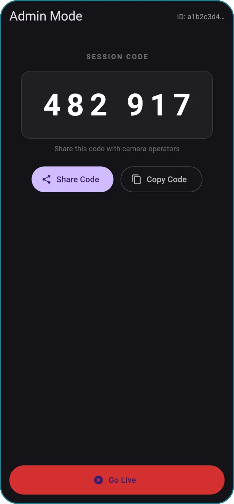
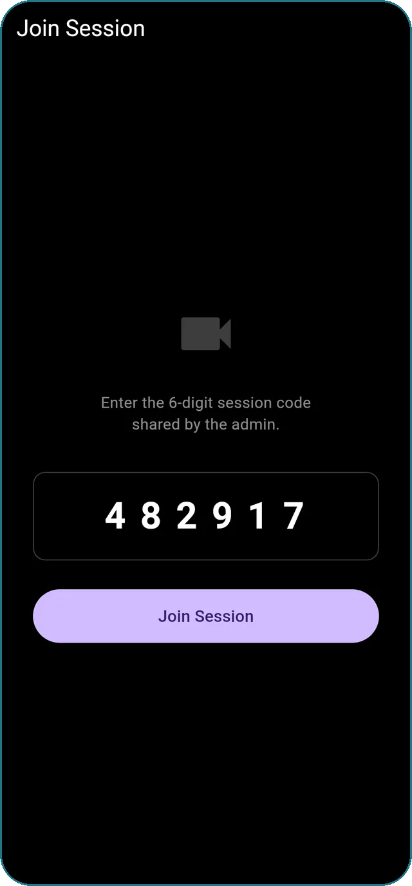
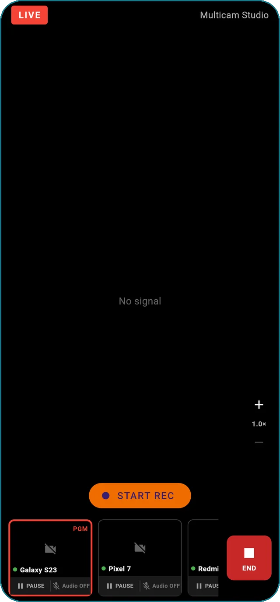
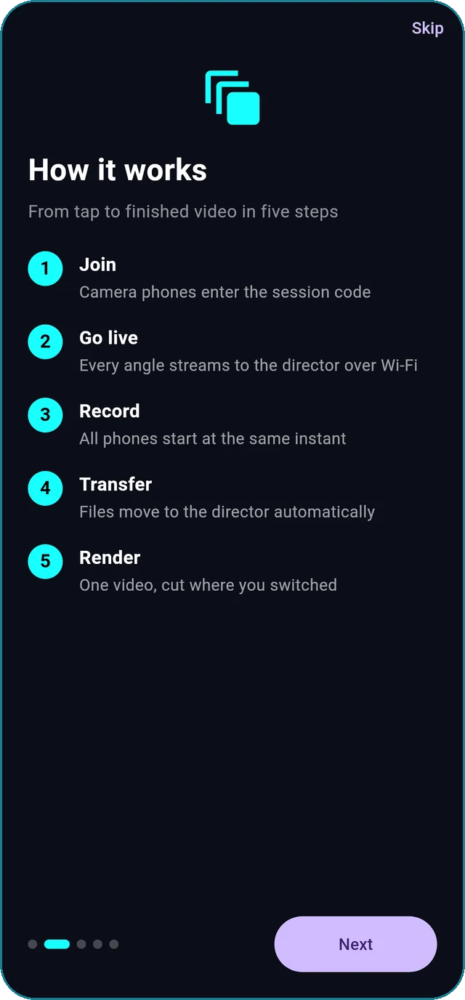
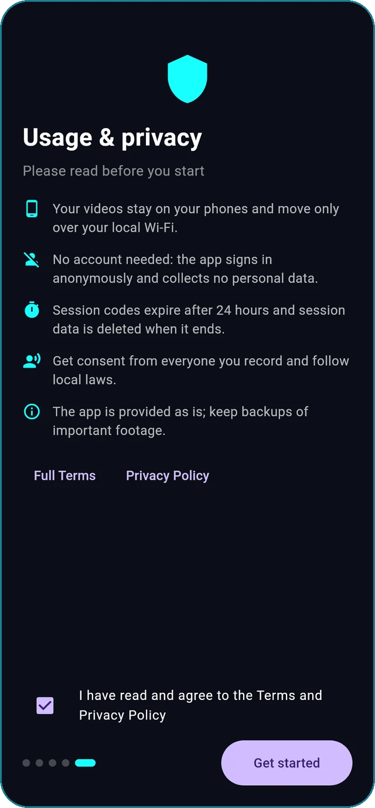

← الأعمال
Multicam Studio
عدة هواتف أندرويد تعمل كاستوديو تصوير واحد
صوّر المشهد من عدة زوايا بهواتف عادية، واقطع بينها مباشرة.
- المنصة
- أندرويد
- التقنيات
- Flutter
- الدور
- مطوّر ومحلّل أنظمة
- اللقطات
- من التطبيق وهو يعمل


عن العمل
يفتح المخرج جلسة فيظهر له رمز من ستة أرقام. تدخل هواتف الكاميرا بالرمز وتبث للمخرج عبر الواي فاي المحلي، فيبدأ التسجيل على كل الهواتف معاً ويقطع بين الزوايا مباشرة.
تنتقل الملفات إلى المخرج تلقائياً بعد التسجيل، ولا يحتاج التطبيق إلى حساب.
وضعان
كاميرا للهواتف المصوّرة ومخرج للمتحكم.
انضمام برمز
رمز من ستة أرقام.
تسجيل متزامن
زر واحد يبدأ التسجيل على الكل.
بلا حساب
الجلسة تنتهي وبياناتها تُحذف.
شروط واضحة
شاشة للاستخدام والخصوصية قبل البدء.
الشاشات



